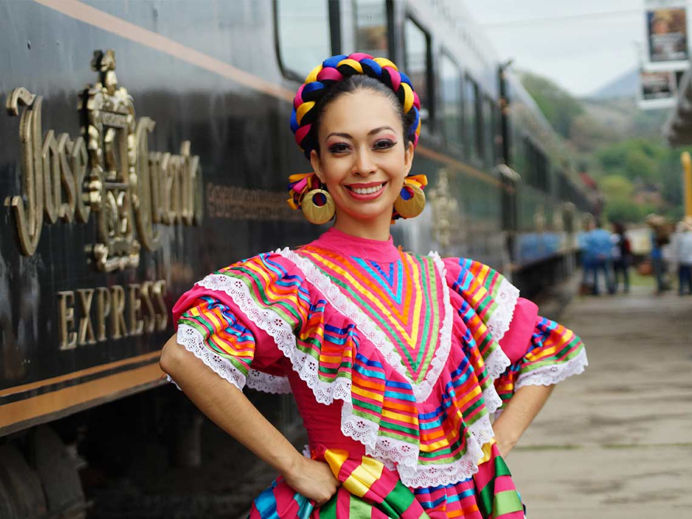

Target Audience
Description
The personas included in this page are used to buy a lot trought internet, or they search a lot of information to make sure that they are about to buy something, and want to check if they company is legitm.
Persona 1
She is Maria. She is 40 years old. She is from Villahermosa, Tabasco, Mexico. She is an artisan and works as well in the art field. She has two children. Her goals are discover new unique stores to buy a nice material to make handicrafts. She is looking for new provides, even investors to push her bussiness. Her habits are practice new handicrafts techniques, search over internet about trends, and she likes to teach others about how to be successful in this field. She is looking for loyal companies.
Persona 2
She is Dana. She is 35 years old. She is from Villahermosa, Tabasco, Mexico. She is an entrepeneur. She is single. Her goals are discover new bussiness partners. Her habits are taking workshops about self-steem and entrepreneurship, she searches over internet about how to improve herself, and she likes to teach others about how to be successful in this field. She is looking for more knowledge.
Scenarios
Where can I buy raw material?
Where can I find workshops about entrepreneurship?
What are the best places to find investors?
How can I become famous?